제7장 ggmap 패키지 실습 (02)
제7장 ggmap 패키지 실습 (02)R을 이용해서 구글 지도 활용하기(연습) zoom의 값을 3과 21로 해서 각각 지도를 그려본다.Wifi 지도 그리기(1) 바탕지도 그리기(2) 지도 위에 점 찍기(3) 2차원 밀도(2D Density) 보여주기(4) 2차원 밀도(2D Density) 모양 바꾸기(5) 2차원 밀도(2D Density)의 색깔 바꾸기(6) 2차원 밀도(2D Density) 투명도 조절국내 항공 노선 그리기(1) 데이터 세트(2) 공항에 점찍기(3) 그리고 두 공항 간의 노선을 선으로 그리기 : geom_line()
R을 이용해서 구글 지도 활용하기
R를 GIS에 활용할 수 있게 해주는 가장 손쉬운 패키지가 ggmap이다.
ggmap 패키지는 R에서 시각화 대표 주자로 꼽히는 ggplot2 패키지를 활용한다.
ggplot2는 정말 인기가 많고 기능도 뛰어난 시각화 도구이다.
이 패키지를 설명한 책이 따로 있을 정도니까
처음 배울 때 시간과 노력이 필요한 '러닝 커브'를 무시할 수는 없습니다.
xxxxxxxxxx# 패키지를 설치하는 함수 : install.packages()# 패키지를 불러오는 함수 : library()install.packages("ggplot2")install.packages("ggmap")library(ggmap) # ggplot2 패키지도 함께 불러온다.library(ggplot2)register_google(key = "Google API Key") # 구글 API 인증# 1. 한국 지도 그리기.ggmap(get_map(location='south korea', zoom=7))ggmap(get_googlemap(location='South Korea', zoom=7))결과 :
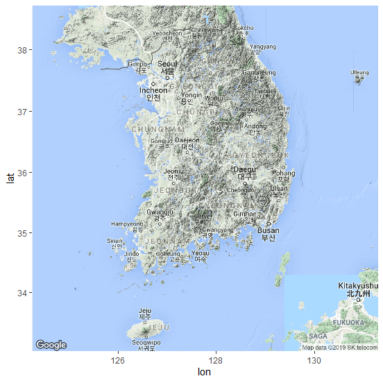
<의미>
- ggmap() 함수 : ggplot 기능을 활용해 지도를 그리라는 뜻
get_map(location='south korea', zoom=7) : get_map은 지도 정보를 가져오는 함수
- location = 'south korea' : 위치(location) 지도 정보를
- zoom = 7 : 지도의 배율(zoom) , (zoom은 3부터 21까지 지정가능, 숫자가 작을수록 넓은 지역)
get_map() 함수의 도움말을 보고 싶으면, R Console에서 ?get_map()을 입력한다.
http://127.0.0.1:26863/library/ggmap/html/get_map.html
(연습) zoom의 값을 3과 21로 해서 각각 지도를 그려본다.
xxxxxxxxxxggmap(get_map(location='South Korea', zoom=3))결과 :
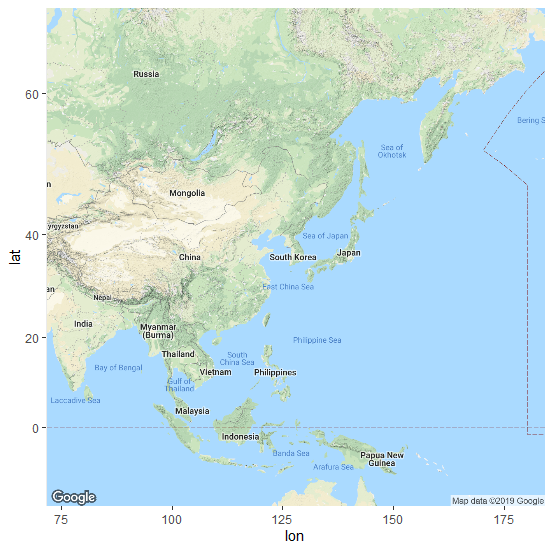
xxxxxxxxxxggmap(get_map(location='South Korea', zoom=21))결과 :
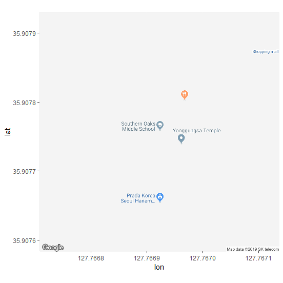
- 위도(latitude)는 적도를 중심으로 얼마나 남/북쪽에 있는지를, 그리고 경도(longitudinal)는 영국의 그리니치 천문대를 기준으로 동/서쪽으로 어디에 있는지를 나타난다.
xxxxxxxxxxmyLocation <- c(lon=128.25, lat=35.95)ggmap(get_map(location=myLocation, zoom=7))결과 :

get_map() 함수는 google (지형·terrain) 지도를 가져오는 게 기본.
source 속성 : c("google", "osm", "stamen", "cloudmade")
- 스타멘(stamen) 디자인에서 만든 지도하고 (오픈 소스 지도 서비스),
- 오픈스트리트맵(osm·Open Street Map)도
- cloudmade 등을 가져올 수 있다.
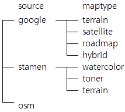
xxxxxxxxxxmap <- get_map(location='South Korea', zoom=7, source='google', maptype='terrain')ggmap(map)결과 :
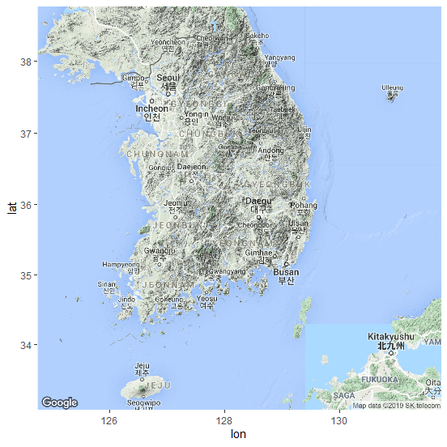
xxxxxxxxxxmap <- get_map(location='South Korea', zoom=7, source='stamen', maptype='watercolor')ggmap(map)결과 :
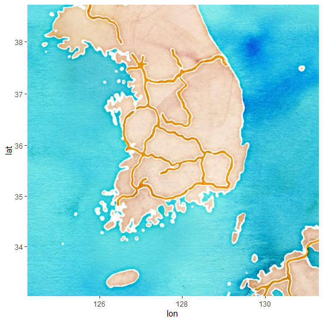
여기서 source와 maptype을 조합하면 지도를 총 8가지 디자인으로 그릴 수 있다.
그리고, 이 디자인 8개 모두 color='bw'를 추가해 흑백으로 바꿔 그릴 수 있다.
디자인이 총 16개 들어 있는 셈이다.
xxxxxxxxxxmap <- get_map(location='South Korea', zoom=7, source='osm')ggmap(map)결과 :
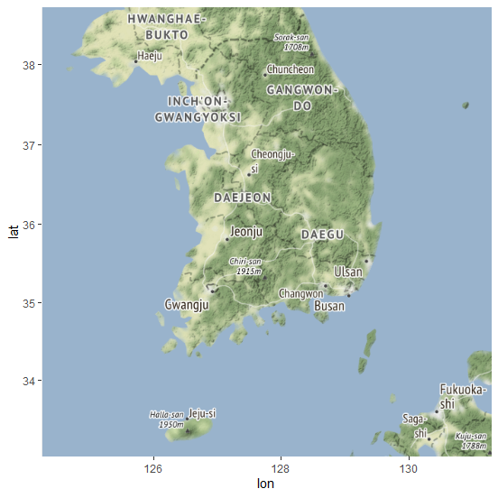
Wifi 지도 그리기
(1) 바탕지도 그리기
xxxxxxxxxx# 구글에서 흑백 도로(roadmap) 지도정보를 받아와서, map이라는 변수에 넣으라는 명령어map <- get_map(location='South Korea', zoom=7, maptype='roadmap', color='bw')ggmap(map)결과 :
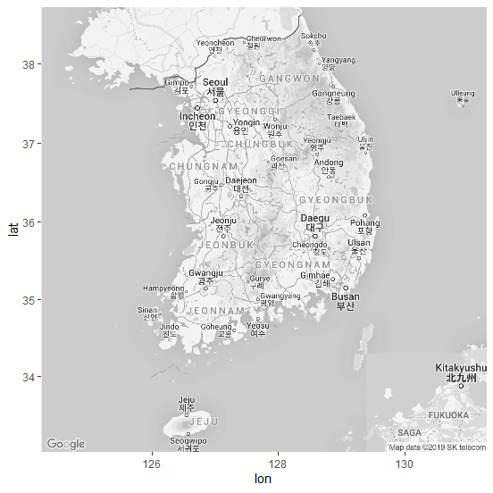
(2) 지도 위에 점 찍기
xxxxxxxxxx# [데이터] 공공 와이파이(WiFi) 위치 표시 (WiFi.csv 파일)# * '한국통신사업자연합회(KTOA)'에서# 공공 와이파이 위치 정도를 담은 마이크로소프트(MS) 엑셀 파일(.xls)을 공개wifi <- read.csv(file.choose(), header=T, as.is=T)wifi <- subset(wifi, wifi$서비스제공사명 == c("KT", "SKT", "LGU+"))str(wifi)wifi <- subset(wifi, wifi$서비스제공사명 == c("KT", "SKT", "LGU+")=> 서비스제공사를 KT, SKT, LGU+ 3개 사로 제한해 본다.
결과 :
xxxxxxxxxx## 'data.frame': 5454 obs. of 18 variables:## $ 설치장소명 : chr "의령군노인복지관" "신반시장" "의령군청소년수련관" "소망의집" ...## $ 설치장소상세 : chr "1층" "신반시장" "1층" "1층" ...## $ 설치시도명 : chr "경상남도" "경상남도" "경상남도" "경상남도" ...## $ 설치시군구명 : chr "의령군" "의령군" "의령군" "의령군" ...## $ 설치시설구분 : chr "서민·복지시설" "기타" "교육시설" "서민·복지시설" ...## $ 서비스제공사명 : chr "SKT" "LGU+" "SKT" "SKT" ...## $ 와이파이SSID : chr "Public WiFi Free" "Public WiFi Free" "Public WiFi Free" "Public WiFi Free" ...## $ 설치년월 : chr "2014-12" "2014-01" "2014-12" "2014-12" ...## $ 소재지도로명주소: chr "경상남도 의령군 의령읍 의병로 8길 16" "경상남도 의령군 부림면 신번로9길" "경상남도 의령군 부림면 신번로 11길 26" "경상남도 의령군 가례면 가례로 667-7" ...## $ 소재지지번주소 : chr "경상남도 의령군 의령읍 서동리 534" "경상남도 의령군 부림면 신반리 562" "경상남도 의령군 부림면 신반리 1071" "경상남도 의령군 가례면 개승리 143-1" ...## $ 관리기관명 : chr "의령군" "의령군" "의령군" "의령군" ...## $ 관리기관전화번호: chr "055-570-2780" "055-570-2780" "055-570-2780" "055-570-2780" ...## $ 위도 : num 35.3 35.5 35.5 35.4 36 ...## $ 경도 : num 128 128 128 128 128 ...## $ 데이터기준일자 : chr "2018-08-06" "2018-08-06" "2018-08-06" "2018-08-06" ...## $ 제공기관코드 : chr "5390000" "5390000" "5390000" "5390000" ...## $ 제공기관명 : chr "경상남도 의령군" "경상남도 의령군" "경상남도 의령군" "경상남도 의령군" ...## $ X : logi NA NA NA NA NA NA ...
- wifi :
서비스제공사명,위도,경도등의 세 컬럼의 데이터
xxxxxxxxxxggmap(map) + geom_point( data = wifi, aes(x = 경도, y = 위도, color = 서비스제공사명 ))코드 설명 :
geom_point()로 레이어(점 그래프)를 한 장 더 그리는 것.
인수 :
data = wifi : 사용될 데이터로 wifi 지정.
aes : aesthetic(美的인)에서 따온 말. aes 어떤 자료를 어떻게 쓰면 된다고 알려주는 기능.
- (위치)
x = 경도: 지도의 x 축 - (위치)
y = 위도: 지도의 y 축 color =서비스제공사명=> 서비스제공사별로 색 (KT, SKT, LGU+ 등 3사)
- (위치)
결과 :
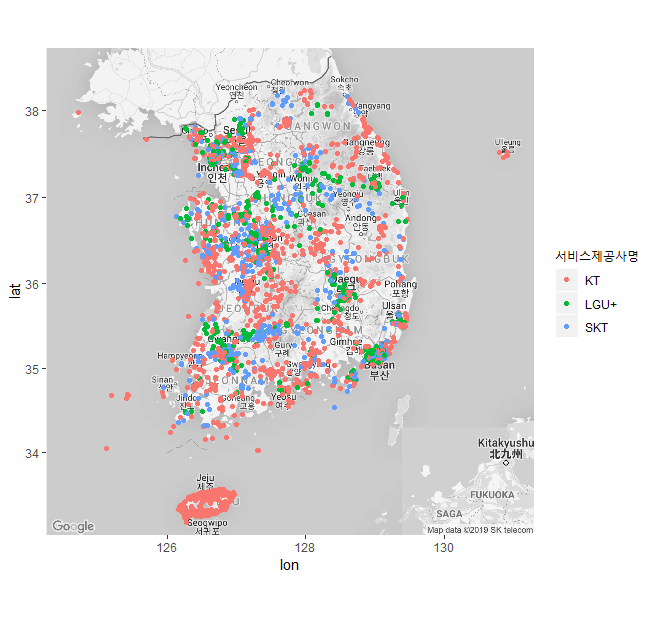
ggplot2 패키지는 ggplot() 함수를 바탕으로 여러 레이어(layer)를 겹치는 방식으로 작동.
원래 ggplot()이 들어가야 할 자리에 ggmap()이 대신 들어간 것.
===> 이 명령어는 일단 맨 밑에 지도를 한 장 깔고, 그 위에 점 그래프를 그린다.
(3) 2차원 밀도(2D Density) 보여주기
xxxxxxxxxx# stat_density_2d() 함수를 활용ggmap(map) + # 기본 지도stat_density_2d(data = wifi, aes(x = 경도, y = 위도)) # 2D Density 겹치기stat_density_2d() 함수
인수 :
data =: 사용될 데이터aes(): aes 요소x =: x 축의 값. 경도(longitudinal)y =: y 축의 값. 위도(latitude)fill =: 색깔로 채우라는 뜻...level..은 레벨(level)이 높을수록, 그러니까 앞서 예를 든 것처럼 기압이 높거나 고도가 높을수록 더 진한 색깔을 칠하라는 뜻alpha =: 투명도...level..역시 같은 원리로 레벨이 높으면 불투명하게(색이 더 잘 드러나게) 칠하고 낮을 때는 투명하게(희미하게) 칠하라는 의미
geom='polygon':polygon은 다각형이라는 뜻. 기본값은 선으로 도형(polygon)으로 그리라는 명령.size = 2: 선의 굵기bins = 30: 선의 간격
주의 : 이러한 옵션들에 대한 자세한 사항은 ggplot2의 치트 시트 참조** 하기 바람.
결과 :
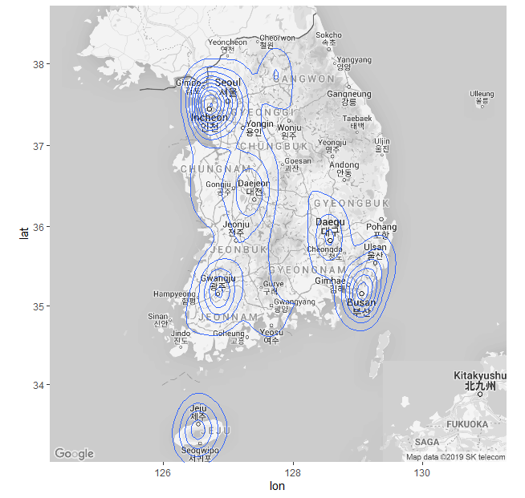
- 날씨 예보에서 기압선을 그리는 모양
- 높이가 같은 점을 이은 등고선처럼 보이기도 하함.
- 그냥 점을 찍었을 때보다 서울과 광역시 중심으로 공공 와이파이가 많다는 게 확인됨.
(4) 2차원 밀도(2D Density) 모양 바꾸기
xxxxxxxxxxggmap(map) + stat_density_2d(data = wifi, aes(x = 경도, y = 위도, fill=..level.., alpha=..level..), geom='polygon', size=2, bins=30)결과 :
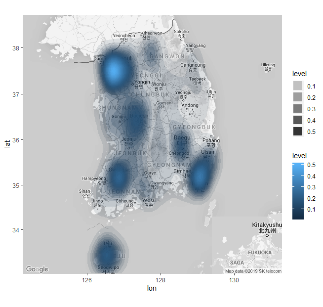
ggplot()은 레이어를 겹치는 방식이기 때문에 그래프를 변수에 넣어두면 편리하다.
xxxxxxxxxxp2d <- ggmap(map) + stat_density_2d(data=wifi, aes(x=lon, y=lat, fill=..level.., alpha=..level..), geom='polygon', size=7, bins=28)p2d # 또는 print(p2d)결과 :
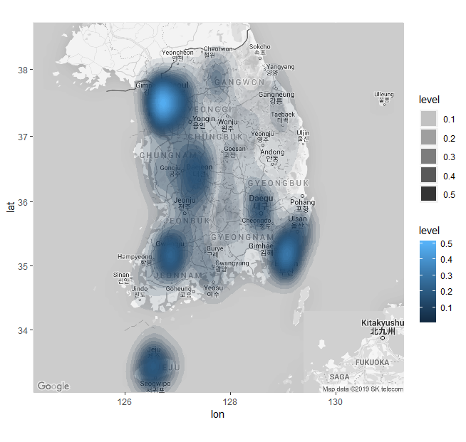
(5) 2차원 밀도(2D Density)의 색깔 바꾸기
xxxxxxxxxx# 밀도를 나타내는 색깔을 바꿔 보기# 범위에 따라 단계적으로 색깔이 변하게 하는 함수 : scale_fill_gradient()p_grad <- p2d + scale_fill_gradient(low='yellow', high='red')p_grad scale_fill_gradient( ) 함수
인수 :
low='yellow': 낮은 값은 노란색(yellow)high='red': 높은 값은 빨간색(red)
결과 :
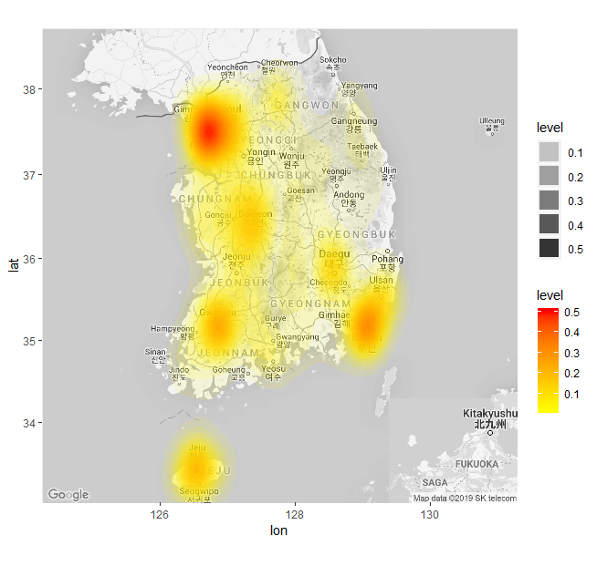
(6) 2차원 밀도(2D Density) 투명도 조절
xxxxxxxxxx# ------# 투명도 조절p_alpha <- p2d +scale_fill_gradient(low='yellow', high='red', guide=F) +scale_alpha(range=c(0.02, 0.8), guide=F)p_alphascale_alpha( ) 함수 이용
인수 :
range=c(0.02, 0.8): 투명도의 범위(range). 레벨에 따라 2%에서 80%까지 투명도를 알아서 조절하라는 뜻guide=F: F는 FALSE, 그러니까 범례를 표시하지 말라는 명령어
결과 :
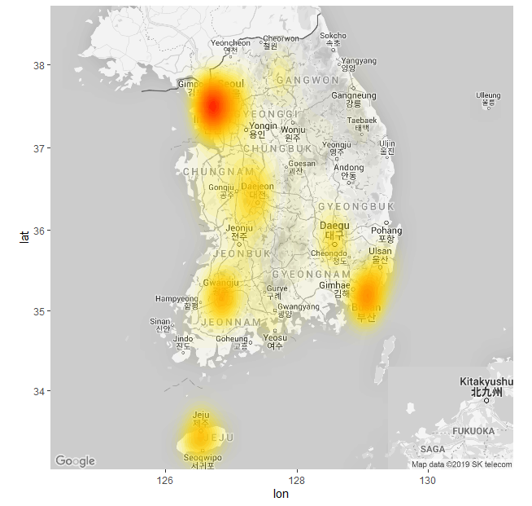
국내 항공 노선 그리기
(1) 데이터 세트
- airport.csv : 한국에 있는 공항 위치(경도, 위도)
- route.csv : 공항을 연결하는 국내선 비행노선
xxxxxxxxxxairport <- read.csv(file.choose(), header=T, as.is=T) # airport.csv 파일 불러오기route <- read.csv(file.choose(), header=T, as.is=T) # route.csv 파일 불러오기head(airport) # airport, iata, lon, lat 등의 4개 열로 구성head(route) # id, airport, lon, lat 등의 4개 열로 구성# IATA : 국제항공운송협회(The International Air Transport Association) 약자# 이 협회는 전 세계 공항에 코드를 부여하고 있는데 그 정보가 airport$iata결과 :
xxxxxxxxxx> head(airport) # airport, iata, lon, lat 등의 4개 열로 구성## airport iata lon lat## 1 강릉 KAG 128.944 37.7536## 2 광주 KWJ 126.809 35.1264## 3 군산 KUV 126.616 35.9038## 4 김포 GMP 126.791 37.5583## 5 대구 TAE 128.659 35.8941## 6 목포 MPK 126.380 34.7589> head(route) # id, airport, lon, lat 등의 4개 열로 구성## id airport lon lat## 1 1 CJJ 127.499 36.7166## 2 7 CJJ 127.499 36.7166## 3 45 CJJ 127.499 36.7166## 4 77 CJJ 127.499 36.7166## 5 2 CJJ 127.499 36.7166## 6 8 CJJ 127.499 36.7166
(2) 공항에 점찍기
xxxxxxxxxx# 변수 map은 ‘South Korea’ 지도# ggmap(map) : 한국지도g_airport <- ggmap(map) + geom_point(data=airport, aes(x=lon, y=lat))g_airportgeom_point() 함수 이용
결과 :
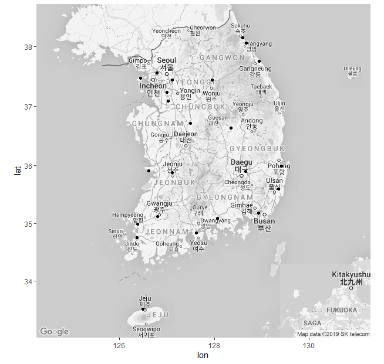
(3) 그리고 두 공항 간의 노선을 선으로 그리기 : geom_line()
xxxxxxxxxx#-------# geocode() 함수# ggmap 패키지에는 geocode라는 함수가 들어 있다.# 이 함수는 특정 장소 위도, 경도값을 찾아주는 기능을 한다.# 인천공항과 김포공항의 위도, 경도 알아 보기geocode(c('incheon airport', 'gimpo airport'))결과 :
xxxxxxxxxx## # A tibble: 2 x 2## lon lat## <dbl> <dbl>## 1 126. 37.5## 2 127. 37.6
xxxxxxxxxxp_point <- ggmap(map) + geom_point(data=airport, aes(x=lon, y=lat))p_line <- p_point + geom_line(data=route, aes(x=lon, y=lat, group=id))p_linegeom_line( ) 함수 이용
인수 :
data = : 사용할 데이터 지정
aes( ) :
x =: x 축의 변수 지정 (경도,lon)y =: y 축의 변수 지정 (위도,lat)group =: 점과 점을 잇는 선의 기준.id: id 순서대로 자료를 뽑아 보면 1번 id는 '제주공항'과 '청주공항'을 이어주는 노선
결과 :
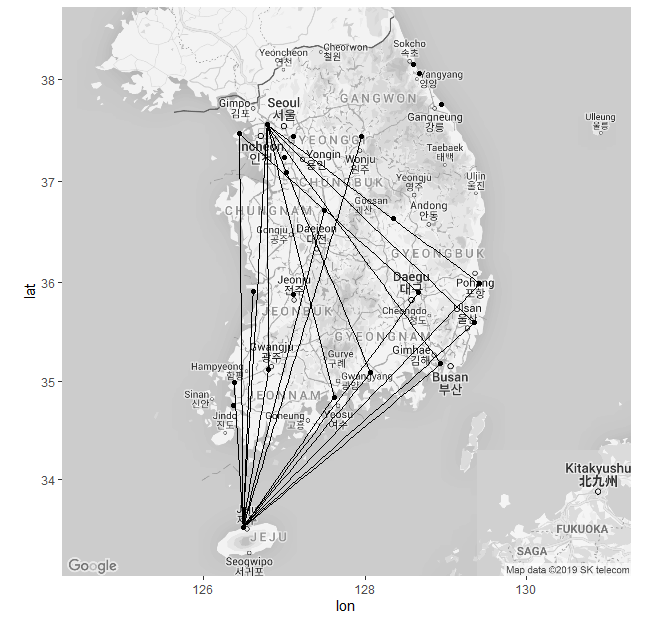